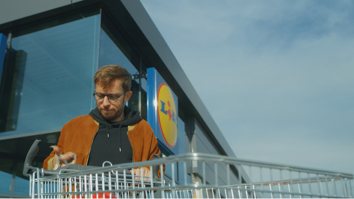
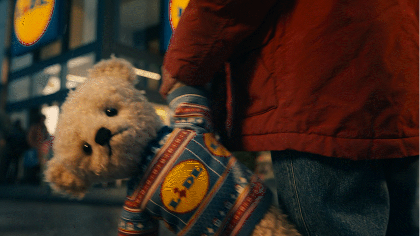

DESPRE
RELAȚIE.
Când am citit brieful, primul lucru care mi-a venit în minte nu a fost un cadru de film. A fost un sunet: râsul pe care îl faci când cineva spune exact ce gândeai tu, dar n-ai zis niciodată cu voce tare.
Lidl nu e doar un magazin. E un personaj colectiv din viața noastră de zi cu zi. E locul în care intri cu o intenție foarte clară și ieși cu încă trei povești, două impulsuri și un produs despre care o să vorbești mai târziu cu cineva.
În esență, filmul ăsta nu celebrează 15 ani de prezență, ci 15 ani de reflexe, glume, obsesii mici, ponturi, meme-uri și replici pe care românii le-au construit în jurul unui brand care a intrat în cultură fără să forțeze ușa. Asta mi se pare cheia: să nu facem un film despre Lidl, ci un film despre felul în care Lidl există deja în viața românilor.



Vizual și narativ e un spot care se simte ca un doom scroll de TikTok-uri românești: familiar, amuzant, ușor haotic, dar cu o inimă mare. Fiecare vignetă trebuie să fie un moment de recunoaștere: „Asta suntem noi. Asta se întâmplă în România zilelor noastre."
.gif)


.gif)